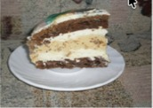
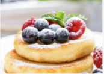
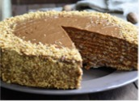
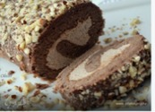
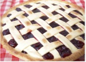
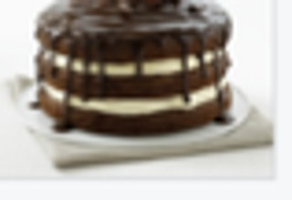
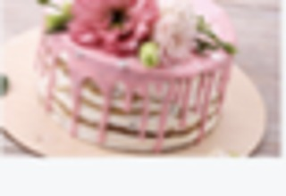
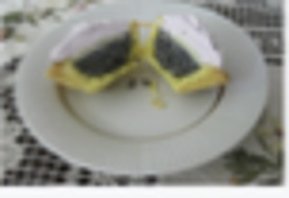

ТортСметанковий
Ніжний домашній торт зі сметанковим кремом.
Моя цифрова книга рецептів
Улюблені домашні десерти в одному місці — красиво, зручно та адаптивно.
Обрати категорію
Добірка дня

ТортНіжний домашній торт зі сметанковим кремом.
Повітряний мафін із ніжним кремом та посипкою.

СирникиСирний десерт зі свіжими ягодами та легким кремом.

ТортКласичний горіховий торт із насиченим кремом.

РулетШоколадний рулет із кремовою начинкою та горіхами.

ПирігЯгідний пиріг із хрусткою золотистою скоринкою.

ТортШоколадно-вершковий торт для особливих вечорів.

ТістечкоЯскраве кремове тістечко для святкового столу.

ТістечкоЛегкий цитрусовий десерт із маковим акцентом.